기계설계산업기사 (2016-08-21 기출문제)
1과목: 기계가공법 및 안전관리
1. 호환성이 있는 제품을 대량으로 만들 수 있도록 가공위치를 쉽고 정확하게 결정하기 위한 보조용 기구는?
- 지그
- 센터
- 바이스
- 플렌지
(정답률: 76%)

2. 다음 중 소재의 두께가 0.5mm인 얇은 박판에 가공한 구멍의 내경을 측정할 수 없는 측정기는?
- 투영기
- 공구 현미경
- 옵티컬 플랫
- 3차원 측정기
(정답률: 61%)
3. 밀링작업의 안전수칙에 대한 설명으로 틀린 것은?
- 공작물의 측정은 주축을 정지하여 놓고 실시한다.
- 급속이송은 백래쉬 제거장치가 작동하고 있을 때 실시한다.
- 중절삭할 때에는 공작물을 가능한 바이스에 깊숙이 물려야 한다.
- 공작물을 바이스에 고정할 때 공작물이 변형이 되지 않도록 주의한다.
(정답률: 78%)
4. 테이퍼 플러그 게이지 (taper plug gage)의 측정에서 다음 그림과 같이 정반위에 놓고 핀을 이용해서 측정하려고 한다. M을 구하는 식으로 옳은 것은?
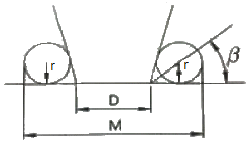
- M = D+r+rㆍcotβ
- M = D+r+rㆍtanß
- M = D+2r+2rㆍcotβ
- M = D+2r+2rㆍtanβ
(정답률: 60%)
5. 드릴의 자루를 테이퍼 자루와 곧은 자루로 구분할 때 곧은 자루의 기준이 되는 드릴 직경은 몇 mm인가?
- 13
- 18
- 20
- 25
(정답률: 51%)
6. 리밍의 관한 설명으로 틀린 것은?
- 날 모앙에는 펑행 날과 비틀림 날이 있다.
- 구멍의 내면을 매끈하고 정밀하게 가공하는 것을 말한다.
- 날 끝에 테이퍼를 주어 가공할 때 공작물에 잘 들어가도록 되어 있다.
- 핸드리머와 기계리머는 자루 부문이 테이퍼로 되어 있어서 가공이 편리하다.
(정답률: 58%)
7. 축용으로 사용되는 한계게이지는?
- 봉 게이지
- 스냅 게이지
- 블록 게이지
- 플러그 게이지
(정답률: 47%)
8. 유막에 의해 마찰면이 완전히 분리되어 윤활의 정상적인 상태를 말하는 것은?
- 경계 윤활
- 고체 윤활
- 극압 윤활
- 유체 윤활
(정답률: 63%)
9. 선삭에서 지름 50mm, 회전수 900rpm, 이송 0.25mm/rev, 길이 50mm를 2회 가공할 때 소요되는 시간은 약 얼마인가?
- 13.4 초
- 26.7 초
- 33.4 초
- 46.7 초
(정답률: 51%)
10. 밀링가공에서 공작물을 고정할 수 있는 장치가 아닌 것은?
- 면판
- 바이스
- 분할대
- 회전 테이블
(정답률: 51%)
11. 선반가공에서 절삭저항의 3분력이 아닌 것은?
- 배분력
- 주분력
- 이송분력
- 절삭분력
(정답률: 81%)
12. 윤활제의 급유방법으로 틀린 것은?
- 강제 급유법
- 적하 급유법
- 진공 급유법
- 핸드 급유법
(정답률: 69%)
13. 보통형과 유성형 방식이 있는 연삭기는?
- 나사 연삭기
- 내면 연삭기
- 외면 연삭기
- 평면 연삭기
(정답률: 52%)
14. 원하는 형상을 한 공구를 공작물의 표면에 눌러대고 이동시켜 표면에 소성변형을 주어 정도가 높은 면을 얻기 위한 가공법은?
- 래핑
- 버니싱
- 폴리싱
- 슈퍼 피니싱
(정답률: 44%)
15. 그림과 같은 공작물을 양 센터 작업에서 심압대를 편위시켜 가공할 때 편위랑은?
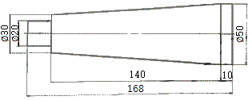
- 6 mm
- 8 mm
- 10 mm
- 12 mm
(정답률: 46%)
16. 창성식 기어절삭작업에 대한 설명으로 옳은 것은?
- 밀링머신과 같이 총형 밀링커터를 이용하여 절삭하는 방법이다.
- 셰이퍼 등에서 바이트를 치형에 맞추어 절삭하여 완성하는 방법이다.
- 셰이퍼의 테이블에 모형과 소재를 고정한 모형에 따라 절삭하는 방법이다.
- 호빙 머신에서 절삭공구와 일감을 서로 적당한 상대운동을 시켜서 치형을 절삭하는 방법이다.
(정답률: 53%)
17. 보링 머신의 크기를 표시하는 방법으로 틀린 것은?
- 주축의 지름
- 주축의 이송거리
- 테이블의 이동거리
- 보링 바이트의 크기
(정답률: 62%)
18. 평면도 측정과 관계없는 것은?
- 수준기
- 링 게이지
- 옵티컬 플랫
- 오토콜리메이터
(정답률: 56%)
19. 밀링머신 호칭번호를 분류하는 기준으로 옳은 것은?
- 기계의 높이
- 주축모터의 크기
- 기계의 설치 면적
- 테이블의 이동거리
(정답률: 72%)
20. 센터리스 연삭기의 특징으로 틀린 것은?
- 긴 홈이 있는 가공물이나 대형 또는 중량물의 연삭이 가능하다.
- 연삭숫돌 폭보다 넓은 가공물을 플랜지 컷 방식으로 연삭 할 수 없다.
- 연삭숫돌의 폭이 크므로, 연삭숫돌 지름의 마멸이 적고, 수명이 길다.
- 센터가 필요하지 않아 센터 구멍을 가공할 필요가 없고, 속이 빈 가공물을 연삭할 때 편리하다.
(정답률: 69%)
2과목: 기계제도
21. 그림과 같은 입체도의 제3각 정투상도로 가장 적합한 것은?
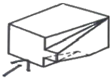
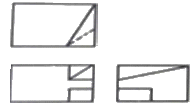
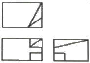
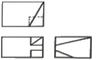
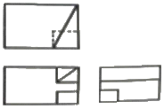
(정답률: 60%)
22. 베어링 호칭번호 6308 Z NR에서 “08"이 의미하는 것은?
- 실드기호
- 안지름 번호
- 베어링 계열 기호
- 베이스 형상 기호
(정답률: 86%)
23. 표면의 결 지시방법에서 “제거 가공을 허용하지 않는다”를 나타내는 것은?
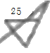
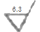
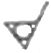
(정답률: 72%)
24. 나사의 종류를 표시하는 기호 중 미터 사다리꼴 나사의 기호는?
- M
- SM
- PT
- Tr
(정답률: 76%)
25. 그럼에서 로 표시한 부분의 의미로 을바른 것은?
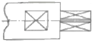
- 정밀 가공 부위를 지시
- 평면임을 지시
- 가공을 금지함을 지시
- 구멍임을 지시
(정답률: 84%)
26. 다음 형상공차의 종류 별 기호 표시가 틀린 것은?
- 평면도 :
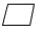
- 위치도 :
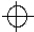
- 진원도 :
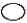
- 원통도 :
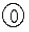
(정답률: 73%)
27. 가공부에 표시하는 다듬질 기호 중 줄 다듬질의 기호는?
- FF
- FL
- FS
- FR
(정답률: 72%)
28. 도면에 표시된 재료기호가 “SF 390A”로 되었을 때 “390”이 뜻하는 것은?
- 재질 번호
- 탄소 함유량
- 최저 인장 강도
- 제품 번호
(정답률: 76%)
29. KS 나사가 다음과 같이 표시될 때 이에 대한 설명으로 옳은 것은?
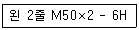
- 나사산의 감긴 방항은 왼쪽이 고 2줄나사이다.
- 미터 보통 나사로 피치가 6mm이다.
- 수나사이고, 공차 등급은 6급, 공차 위치는 H이다.
- 이 기호만으로는 암나사인지 수나사인지를 알 수 없다.
(정답률: 77%)
30. 단면도의 절단된 부분을 나타내는 해칭선을 그리는 선은?
- 가는 2점 쇄선
- 가는 파선
- 가는 실선
- 가는 1점 쇄선
(정답률: 71%)
31. 다음과 같은 입체도를 제3각법으로 올바르게 나타낸 것은?
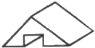
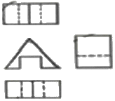
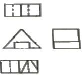
(정답률: 84%)
32. 다음 중 니켈 크로뮴 강의 KS 기호는?
- SCM 415
- SNC 415
- SMnC 420
- SNCM 420
(정답률: 56%)
33. 구명의 치수가
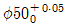
, 축의 치수가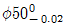
일 때, 최대 틈새는 얼마인가?- 0.02
- 0.03
- 0.⑤
- 0.07
(정답률: 80%)
34. 철골 구조물 도면에 2-L75×75×6-1800 으로 표시된 형강을 올바르게 설명한 것은?
- 부등변 부등두께 ㄱ형강이며, 길이는 1800mm이다.
- 형강의 개수는 6개이다.
- 형강의 두께는 75mm이며, 그 길이는 1500mm이다.
- 형강 양변의 길이는 75mm로 동일하며 두께는 6mm이다.
(정답률: 70%)
35. 다음 중 위치 공차를 나타내는 기호가 아닌 것은?
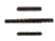
(정답률: 69%)
36. 다음과 같이 투상된 정면도와 우측면도에 가장 적합한 평면도는?
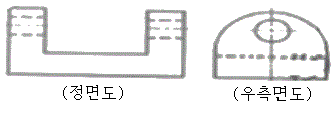
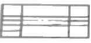
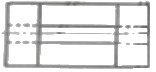
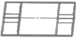
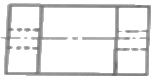
(정답률: 76%)
37. 그림과 같은 입체도의 제3각 정투상도에서 누락된 우측면도로 가장 적합한 것은?
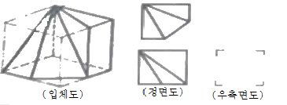
(정답률: 59%)
38. 그림과 같이 용접기호가 도시될 때 이에 대한 설명으로 잘못된 것은?
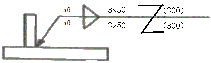
- 양쪽의 용접 목 두께는 모두 6mm이다.
- 용접부의 개수(용접수)는 양쪽에 3개씩이다.
- 피치는 양쪽 모두 50mm이다.
- 지그재그 단속 용접이다.
(정답률: 50%)
39. 다음 중 다이캐스팅용 알루미늄 합금에 해당하는 기호는?(오류 신고가 접수된 문제입니다. 반드시 정답과 해설을 확인하시기 바랍니다.)
- WM 1
- ALDC 1
- BC 1
- ZDC
(정답률: 80%)
40. 그림과 같은 물 탱크의 측면도에서 원통 부분을 6mm 두께의 강판을 사용하여 판금 작업하고자 전개도를 작성하려고 한다. 이 원통의 바깥지름이 600mm 일 때 필요한 마름질 길이는 약 몇 mm 인가? (단, 두께를 고려하여 구한다.)
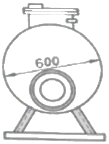
- 1903.8
- 1875.5
- 1885
- 1866.1
(정답률: 30%)
3과목: 기계설계 및 기계재료
41. 구리에 아연 5%를 첨가하여 화폐, 메달 등의 재료로 사용되는 것은?
- 델타메탈
- 길딩메탈
- 문쯔메탈
- 네이벌활동
(정답률: 56%)
42. 공구강에서 경도를 증가시키고 시효에 의한 치수변화를 방지하기 위한 열처리 순서로 가장 적합한 것은?
- 담금질 → 심냉처리 → 뜨임처리
- 담금질 → 불림 → 심냉처리
- 불림 → 심냉처리 → 담금질
- 풀림 → 심냉처리 → 담금질
(정답률: 56%)
43. 금속의 이온화 경향이 큰 금속부터 나열한 것은?
- AI＞Mg＞Na＞K＞Ca
- AI＞K＞Ca＞Mg＞Na
- K＞Ca＞Na＞Mg＞AI
- K＞Na＞AI＞Mg＞Ca
(정답률: 49%)
44. 분말 야금에 의하여 제조된 소결 베어링 합금으로 급유하기 어려운 경우에 사용되는 것은?
- Y 합금
- 켈밋(Kelmet)
- 화이트메탈(white metal)
- 오일리스베어링 (oilless bearing)
(정답률: 72%)
45. 탄소강 및 합금강을 담금질(quenching)할 때 냉각 효과가 가장 빠른 냉각액은?
- 물
- 공기
- 기름
- 염수
(정답률: 67%)
46. Ni-Cr강에 첨가하여 강인성을 증가시키고 담금질성을 향상시킬 뿐만 아니라 뜨임 메짐성을 완화시키기 위하여 첨가하는 원소는?
- 망간(Mn)
- 니켈(Ni)
- 마그네슘(Mg)
- 몰리브덴(Mo)
(정답률: 59%)
47. Mn강 중 고온에서 취성이 생기므로 1000~1100℃에서 수중 담금질하는 수인법으로 인성을 부여한 오스테나이트 조직의 구조용강은?
- 붕소강
- 듀콜(ducol)강
- 해드필드(hadfield)강
- 크로만실(chromansil)강
(정답률: 50%)
48. 다음 재료 중 기계구조용 탄소강재를 나타낸 것은?
- STS4
- STC4
- SM45C
- STDll
(정답률: 72%)
49. 탄소강에서 공석강의 현미경 조직은?
- 초석페라이트와 레데뷰라이트
- 초석시멘타이트와 레데뷰라이트
- 레데뷰라이트와 주철의 혼합조직
- 페라이트와 시멘타이트의 혼합조직
(정답률: 73%)
50. 가스 질화법의 특징을 설명한 것 중 틀린 것은?
- 질화 경화층은 침탄층보다 강하다.
- 가스 질화는 NH3의 분해를 이용한다.
- 질화를 신속하게 하기 위하여 글로우 방전을 이용하기도 한다.
- 질화용강은 질화 전에 담금질, 뜨임 등 조질 열처리가 필요 없다.
(정답률: 56%)
51. 벨트의 형상을 치형으로 하여 미끄럼이 거의 없고 정확한 회전비를 얻을 수 있는 벨트는?
- 직물 벨트
- 강 벨트
- 가죽 벨트
- 타이밍 벨트
(정답률: 73%)
52. 잇수는 54, 바깥지름은 280mm인 표준 스퍼기어에서 원주피치는 약 몇 mm 인가?
- 15.7
- 31.4
- 62.8
- 125.6
(정답률: 35%)
53. 둥근 봉을 비틀 때 생기는 비틀림 변형을 이용하여 스프링으로 만든 것은?
- 코일 스프링
- 토션 바
- 판 스프링
- 접시 스프링
(정답률: 73%)
54. 미끄럼 베어링의 재질로서 구비해야 할 성질이 아닌 것은?
- 눌러 붙지 않아야 한다,
- 마찰에 의한 마멸이 적어야 한다,
- 마찰계수가 커야 한다,
- 내식성이 커야 한다.
(정답률: 79%)
55. 피치가 2mm인 3줄 나사에서 90° 회전시키면 나사가 움직인 거리는 몇 mm인가?
- 0.5
- 1
- 1.5
- 2
(정답률: 72%)
56. 1줄 겹치기 리벳 이음에서 리벳 구멍의 지름은 12mm 이고, 리벳의 피치는 45mm 일 때 관의 효율은 약 몇 %인가?
- 80
- 73
- 55
- 42
(정답률: 47%)
57. 폴(pawl)과 결합하여 사용되며, 한쪽 방향으로는 간헐적인 회전운동을 주고 반대쪽으로는 회전을 방지하는 역할을 하는 장치는?
- 플라이 휠
- 드럼 브레이크
- 블록 브레이크
- 래칫 휠
(정답률: 71%)
58. 400rpm 으로 4KW의 동력을 전달하는 중실축의 최소 지름은 약 몇 mm 인가? (단, 축의 허용전단응력은 20.60 MPa 이다.)
- 22
- 13
- 29
- 36
(정답률: 35%)
59. 지름이 4cm의 봉재에 인장하중이 1000N 이 작용할 때 발성하는 인장응력은 약 얼마인가?
- 127.3 N/cm2
- 127.3 N/mm2
- 80 N/cm2
- 80 N/mm2
(정답률: 53%)
60. 묻힘 키에서 키에 생기는 전단응력을 τ, 압축응력을 σ라 할 때, τ/σc = 1/4 이면, 키의 폭 b와 높이 h와의 관계식은? (단, 키 홈의 높이는 키 높이의 1/2라고 한다.)
- b = h
- b = 2h
- h = h/2
- h = 2/4
(정답률: 59%)
4과목: 컴퓨터응용설계
61. 21인치 1600*1200 픽셀 해상도 래스터모니터를 지원하는 그래픽보드가 트루칼라(24비트)를 지원하기 위해 다음과 같은 메모리를 검토하고자 한다. 이 때 사용할 수 있는 가장 작은 메모리는 어느 것인가?
- 1 MB
- 4 MB
- 8 MB
- 32 MB
(정답률: 56%)
62. 칼라 레스터 스캔 디스플레이에서 기본이 되는 3색이 아닌 것은?
- 적색(R)
- 황색(y)
- 청색(B)
- 녹색(G)
(정답률: 70%)
63. 모든 유형의 곡선(직선, 스플라인, 원호 등) 사이를 경사지게 자른 코너를 말하는 것으로 각진 모서리나 꼭지점을 경사 있게 깎아 내리는 작업은?
- Hatch
- Fllet
- Rounding
- Chamfer
(정답률: 72%)
64. CAD 데이터의 교환 표준 중 하나로 국제표준화기구(lSO)가 국제표준으로 지정하고 있으며, CAD의 형상 데이터뿐만아니라 NC데이터나 부품표, 재료 등도 표준 대상이 되는 규격은?
- IGES
- DXF
- STEP
- GKS
(정답률: 53%)
65. 곡면 모델링 시스템에서 일반적으로 요구되는 기능으로 거리가 먼 것은?
- 가공(machining) 기 능
- 변환(transformation) 기능
- 라운딩(rounding) 기능
- 옵셋(offset) 기능
(정답률: 61%)
66. 3차원 좌표를 변환할 때 4×4 동차 변환행렬을 사용한다. 그런데 다음과 같이 3×3 변환 행렬을 사용할 경우 표현할 수 없는 것은?
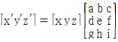
- 이동 변환
- 회전 변환
- 스케일링 변환
- 반사 변환
(정답률: 31%)
67. 꼭지점 개수 v, 모서리 개수 e, 면 또는 외부 루프의 개수 f, 면상에 있는 구멍 루프의 개수 h, 독립된 셀의 개수 s, 입체를 관통하는 구멍(passage)의 개수 p 인 B-rep 모델에서 이들 요소간의 관 계를 나타내는 오일러-포앙카레 공식으로 옳은 것은?
- v-e+f-h = (s-p)
- v-e+f-h = 2(s-p)
- v-e+f-2h = (s-p)
- v-e+f-2h = 2(s-p)
(정답률: 48%)
68. PC가 빠르게 발전하고 성능이 강력해짐에 따라 1990년대 중반부터 원도우 기반의 CAD시스템의 사용이 시작되었다. 다음 증 원도우 기반 CAD 시스템의 일반적인 특징에 관한 설명으로 틀린 것은?
- Windows XP, Windows 2000 등 윈도우의 기능들을 최대한 이용하며, 사용자 인터페이스(user interface)가 마이크로소프트사의 다른 프로그램들과 유사하다.
- 구성요소 기술(com panent technology)라는 접근방식을 사용하여 사용자가 요소의 형상을 직접 변형시키지 않고, 구속조건(constrai nts)를 사용하여 형상을 정의 또는 수정한다.
- 객체지향 기술(object-oriented technology)을 사용하여 다양한 기능에 따라 프로그램을 모듈화시켜 각 모듈을 독립된 단위로 재사용한다.
- 엔지니어링 협업을 위한 인터넷 지원 기능을 가지고, 서로 떨어져 있는 설계자들끼리 의견을 교환할 수 있는 기능도 적용이 가능하다.
(정답률: 37%)
69. 3D CAD 데이터를 사용하여 레이아웃이나 조립성 등을 평가하기 위하여 컴퓨터 상에서 부품을 설계하고 조립체를 생성하는 것은?
- rapid prototyping
- part programming
- reverse engineering
- digital mock-up
(정답률: 56%)
70. (x,y) 평면에서 두 점 (-5,0) (4,-3)을 지나는 직선의 방정식은?
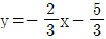
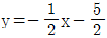
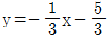
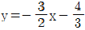
(정답률: 59%)
71. 다음 중 CAD 시스템의 입력장치가 아닌 것은?
- light pen
- joystck
- track ball
- electrostatic plotter
(정답률: 71%)
72. CAD 시스템에서 곡션을 표시하는데 3차식을 사용하는 이유로 가장 적당한 것은?
- 곡면을 생성할 때 고차식에 비해 시간이 적게 걸린다.
- 4차로는 부드러운 곡선을 표현할 수 없 기 때문이다.
- CAD 시스템은 3차를 초과하는 차수의 곡선방정식을 지원할 수 없다.
- 3차식이 아니면 곡선의 연속성이 보장되지 않는다.
(정답률: 60%)
73. 다음과 같은 특징을 가진 곡선은?
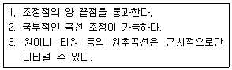
- Bezier 곡선
- Ferguson 곡선
- NURBS 곡선
- B-spline 곡선
(정답률: 53%)
74. 폐쇄된 평면 영역이 단면이 되어 직진이동 혹은 회전이동 시켜 슬리드 모델을 만드는 모델링 기법은?
- 스키닝 (skinning)
- 리프팅 (Iifting)
- 스위핑(sweeping)
- 트위킹(tweaking)
(정답률: 55%)
75. CAD(Computer-Aided Design) 소프트웨어의 가장 기본적인 역할은?
- 기하 형상의 정의
- 해석결과의 가시화
- 유한요소 모델링
- 설계물의 최적화
(정답률: 62%)
76. 다음 중 Coon's patch에 대한 설명으로 가장 옳은 것은?
- 주어진 네 개의 점이 곡면의 네 개의 꼭지점이 되도록 선형 보간하여 얻어지는 곡면을 말한다.
- 조정다면체(control polyhedron) 에 의해 정의되는 곡면을 말한다.
- 네 개의 경계 곡선은 선형 보간하여 생성되는 곡면을 말한다.
- B-spline 곡선을 확장하여 유도되는 곡면을 말한다.
(정답률: 50%)
77. 솔리드 모델링에서 모델을 구현하는 자료가 몇가지 있는데, 복셀 표현(voxel representation)은 어느 자료구조에 속하는가?
- CGS 트리구조
- B-rep 자료구조
- 날개 모서리 (winged-edge) 자료구조
- 분해모젤을 저장하는 자료구조
(정답률: 45%)
78. ax2+ bxy+cy2+dx+ey+g = 0 식에 표시된 계수에 의해서 정의되는 도형으로 옳은 것은?
- 원 : b = 0, a = c
- 타원 : b2- 4ac＞0
- 포물선 : b2- 4ac ≠ 0
- 쌍곡선 : b2- 4ac＜0
(정답률: 46%)
79. 서피스 모델에 관한 설명 중 틀린 것은?
- 단면도를 작성할 수 있다.
- 2면의 교선을 구할 수 있다.
- 질량과 같은 물리적 성질을 구하기 쉽다.
- NC 데이터를 생성할 수 있다.
(정답률: 74%)
80. 2차원 평면에서 두 개의 점이 정의되었을 때 이 두점을 포함하는 원은 몇 개로 정의할 수 있는가?
- 1개
- 2개
- 3개
- 무수히 많다.
(정답률: 73%)